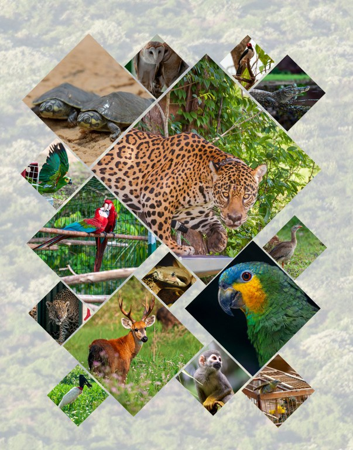

O Brasil é reconhecido mundialmente por possuir a maior biodiversidade do mundo graças a biomas ricos em espécies animais e vegetais como:
Amazônia,
Pantanal,
Cerrado,
Caatinga,
campos dos Pampas
Floresta tropical pluvial da Mata Atlântica.
Além disso, o Brasil possui uma costa marinha de 3,5 milhões km² que inclui ecossistemas como recifes de corais, dunas, manguezais, lagoas, estuários e pântanos.
Brasil tem mais de 3 mil espécies de animais e plantas em risco de extinção.
Esta abundante variedade de vida – que se traduz em mais de 20% do número total
de espécies da Terra – coloca o Brasil ao posto de principal nação entre os 17 países megadiversos.
